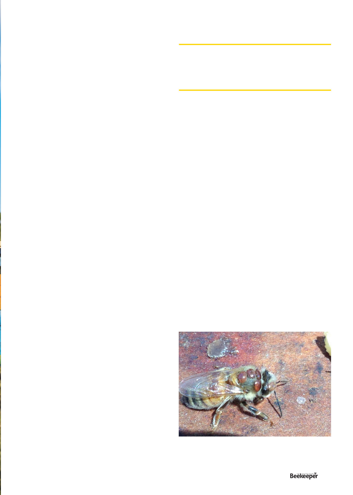

Wasted Years
We’ve had varroa in the U.S. for nearly forty years! When we
put our minds to it, it took only eight years for us to put a man
on the moon. Had we made the effort, we might have done
the same with varroa. But the ready availability of inexpensive
synthetic miticides allowed us to keep treating the symptoms,
rather than addressing the cause.
Let me be clear, the ARS labs, notably the efforts of John
Harbo, Jeff Harris, Tom Rinderer, and Bob Danka (as well as
a number of other beekeepers (such as Danny Weaver and
Kirk Webster), were doing the work of breeding mite-resistant
stocks, but the beekeeping industry itself is to blame for not
demanding (and rewarding) our queen producers to adopt
and improve them.
Practical application: Our queen producers respond to
market demand, and can easily sell every queen that they
produce. Until beekeepers demand mite-resistant stock,
there is little incentive for queen producers to go to the
effort of offering them.
Novel Host-Parasite Relationships
Before humans were involved, some mites evolved para-
sitic lifestyles on various honey bee species in Asia — in stable
host-parasite relationships. When humans later introduced
these mites as novel parasites to the European honey bee,
our beloved bees were caught unprepared to deal with them,
and varroa and Tropilaelaps run rampant (plus increase virus
transmission).
Even after four decades, in North America the vast majority of
managed colonies are still stocked with honey bee bloodlines
that exhibit scant resistance to varroa infestation (although our
feral populations appear to be evolving resistance).
We already know that varroa’s original host, the Eastern honey
bee (Apis cerana), is able to keep varroa (and Tropilaelaps) in
check as “minor parasites” (present, but not causing serious
harm). That means that it’s possible for honey bees to deal
with mites on their own — it’s time for us to get serious about
handing varroa management over to our bees, rather than try-
ing to come up with flashy new miticides.
And we’ve now got Tropilaelaps knocking on our door. All
it’s gonna take is a single swarm on a cargo ship (or some bees
imported into Canada or Mexico) to introduce it into North
America. Since Apis cerana is highly resistant to both varroa
and Tropilaelaps, there’s a good chance that if we breed bees
resistant to varroa, that we may be better prepared for the
invasion of the devastating Tropilaelaps mite.4
Practical application: The only long-term solution to var-
roa and Tropilaelaps is to selectively breed bees that have
the capacity keep these parasites in check without our help!
Breeding may be simple, or more complicated
When the tracheal mite invaded California, it killed 70% of
our colonies. In a few years Steve Taber had selectively bred
bees that were resistant to the mite, and since no one was
breeding from dead colonies, soon the only bees left were
those that were naturally resistant to tracheal mite.
Practical point: The “breeding population” of bees that
existed when tracheal mite invaded already contained
genetic alleles for traits that conferred resistance. Similar
to how a single allele can confer amitraz resistance to a
varroa mite, it appeared that it didn’t take much genetic
change for bees to gain resistance to the tracheal mite.5
Unfortunately, it appears that it takes far more than one
allelic variation to confer resistance to varroa.
The only long-term solution to varroa and
Tropilaelaps is to selectively breed bees that
have the capacity keep these parasites in
check without our help!
Selecting for Tolerance or Resistance?
I often hear of people suggesting that we breed for “mite
tolerant” bees, but is that what we really want? (Figure 2).
Mite tolerance is mainly about virus resistance.6 Back in the
day, honey bees were virus resistant — Dr. Leslie Bailey found
that it was difficult to infect a bee with viruses by mouth. And
when varroa first infested our colonies, our bees were amaz-
ingly mite tolerant, since you could allow the mite infestation
rate to climb to sky-high levels, and then save the colony in
fall with a single treatment with Apistan. But then the viruses
evolved, using varroa as their vector.
We still see some colonies that can tolerate high mite levels,
with healthy brood. But although they don’t die, their bees are
not going to be as healthy as bees that haven’t had their fat
bodies sucked out by a mite.
Practical application: When I first started seriously breed-
ing for mite resistance, my sons asked me whether we
should include the queens of mite-tolerant colonies (lots
of mites, but no signs of virus) as breeders. But since those
colonies did not control their mite population, that would
have maintained non-resistant genetics in our breeding
population, so I decided “no.” On the other hand, mite-re-
sistant colonies keep mites to a nearly undetectable level,
so don’t have any more virus issues than our bees did back
before varroa invaded (no one even talked back then about
any viruses other than sacbrood).
This brings up the obvious question:
How does Varroa’s Native host Deal with the Mite?
I’ve written about this previously,7 and we are not completely
clear on the traits they use,8 but in short, Apis cerana wrote the
• Figure 2. The above bee is mite tolerant (since it is still
alive). But varroa and its associated viruses extract metabolic,
physiological, and immunity costs from the bees’ finite resources.
I suggest selecting for mite resistance rather than tolerance.
Vol. 127 | No. 4 |
| 17